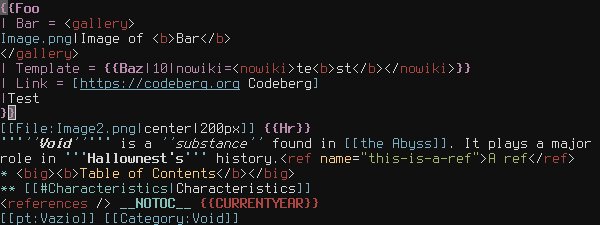

CavernosaSpider


Projects

wikitext.vim
Wikitext/Mediawiki syntax highlighting for Vim.
Wiki Article Images Downloader
Script that downloads all the uncompressed images in a wiki article.
HollowKnight.EmptyMenu
Simple mod that adds an empty menu/screen for full appreciation of the menu styles in Hollow Knight.

Gordura Simulator
A game about fat made in Python 3.